(Lea) Yara Blankenstein
[Click or Scroll ↓]
Nach gut zweieinhalb Jahren im Support für KMUs schließe ich demnächst meine Ausbildung zur Fachinformatikerin für Systemintegration ab.
Mein Fokus: Netzwerke, Linux und Security.
Ich gebe mich nicht damit zufrieden, dass ein System einfach nur „irgendwie läuft“, sondern will verstehen, absichern und optimieren.
Nebenbei tüftle ich an eigenen Setups, bereite mich auf Cisco-Zertifizierungen vor und baue Tools, die den Alltag leichter machen.
Papenburg, NDS
VIBE=retro
(LTS Version)
en_US (C2)
Betreuung und stetige Optimierung der internen heterogenen IT-Landschaft.
- Administration & Wartung von Linux- und Windows-Serversystemen
- Netzwerk-Monitoring, Firewall-Konfiguration und User Support (AP1 & AP2 Vorbereitung)
- Umsetzung von Virtualisierungs- und Datensicherungskonzepten
Solide Grundausbildung in Systemintegration, ISP-Umfeld und Kundensupport.
- 1st & 2nd Level Support via Telefon, E-Mail, Remote & Vor-Ort-Einsätzen
- Initiales Server-Provisioning, Hardware-Diagnose & Komponententausch
- Strukturierte Verkabelung, Router-/Switch-Konfigurationen und VLAN-Setups
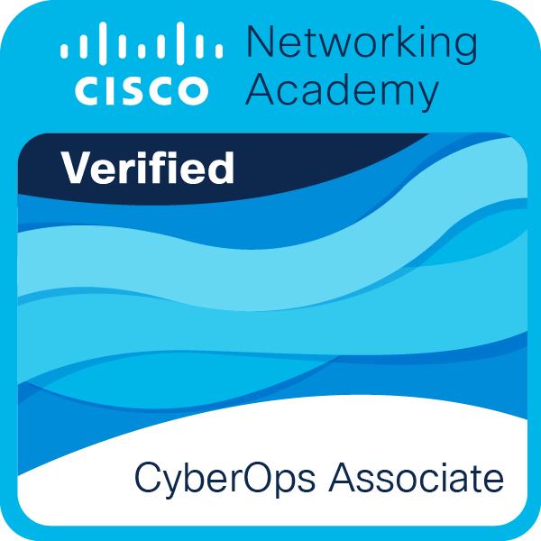
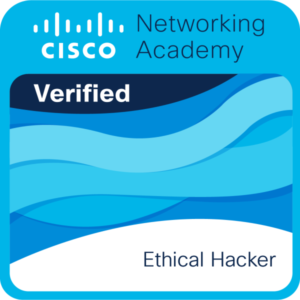
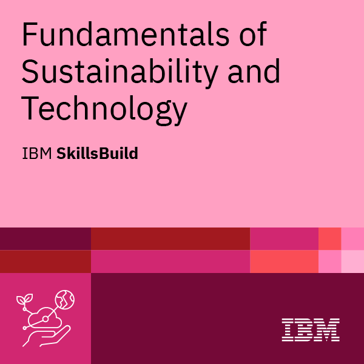
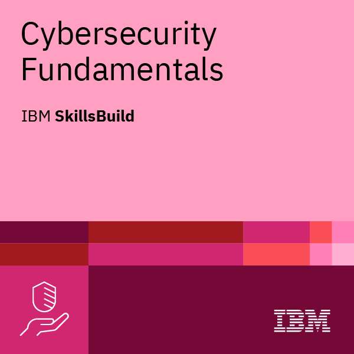
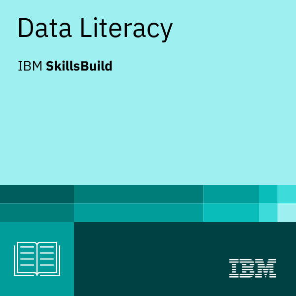
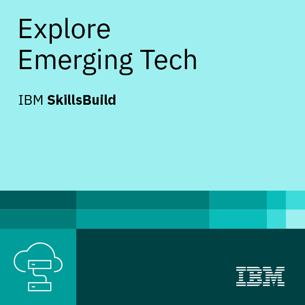
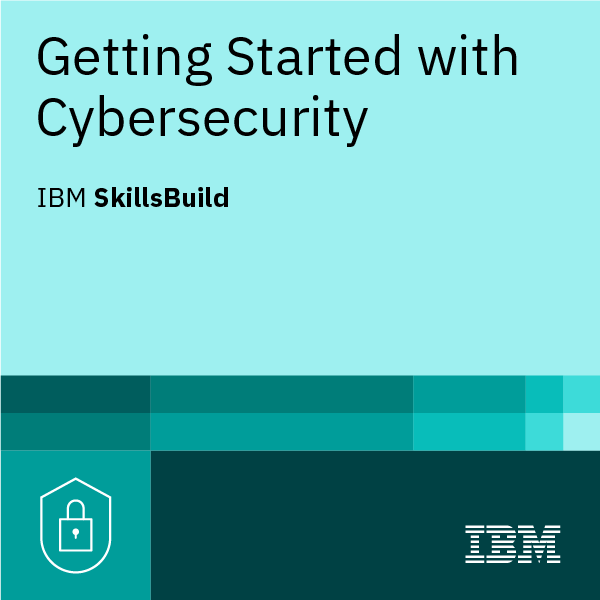
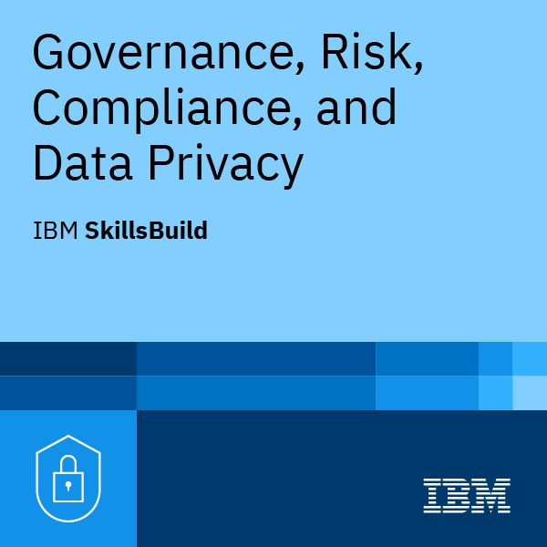
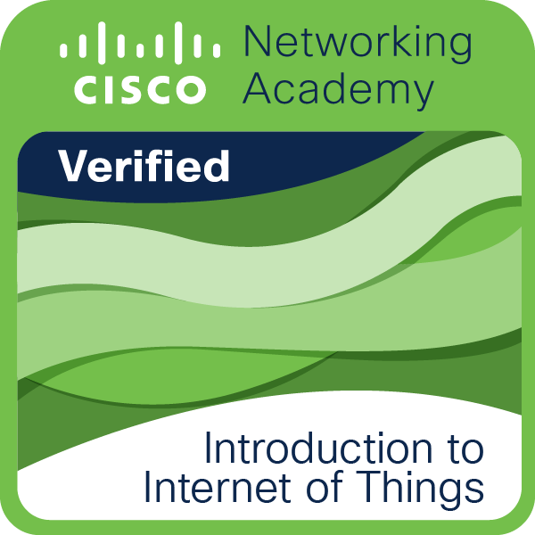
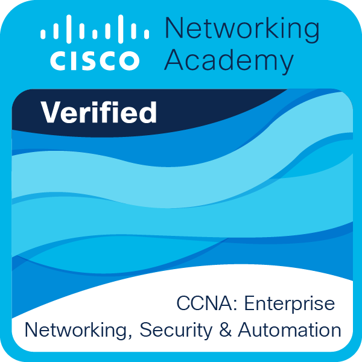
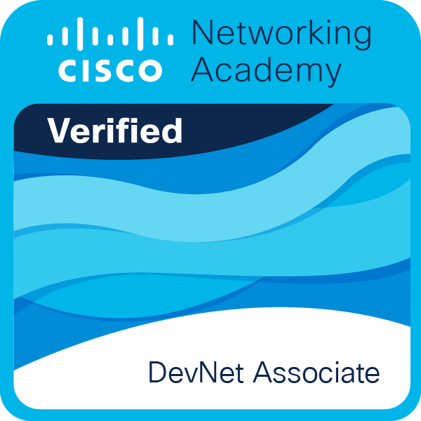
\ | / '-.;;;.-' -==;;;;;==- .-';;;'-. / | \
> Project Icarus
Custom Linux-Distribution (immutable, bluebuild) und Environment-Optimierung für maximale Performance ohne Bloatware.
.---. / \ | @ @ | v - v /| |\
> Bit-By-Bit Buddy
Interaktives Retro-Lern-Terminal im Browser für FiSi-Auszubildende zur Vorbereitung auf die IHK-Abschlussprüfung (AP1).
.---. / \ | | .-------. | (O) |
> Portfolio Deploy
Gehärtete Web-Infrastruktur auf GitHub Pages, proxied über Cloudflare Edge mit HSTS, DNSSEC und optimalem Caching.
> Interesse geweckt?
Ich bin momentan auf der Suche nach neuen Herausforderungen in folgenden Bereichen:
> Ich freue mich aber auch über Chancen in anderen Bereichen.